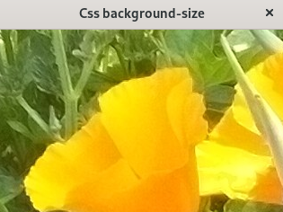
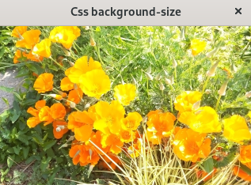
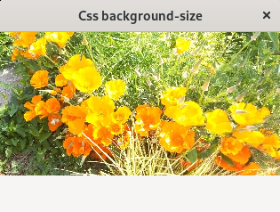
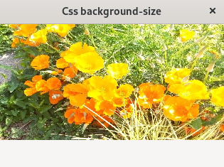
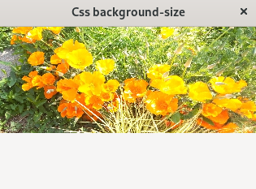

(update:2025/7/25)
background-sizeプロパティは、ウイジットの背景となる画像の大きさを調整するためのプロパティです。
画像の元のサイズを維持します。ウイジットのサイズが画像よりも小さい場合は、画像の一部が表示されます。
window {
background-image: url( "flower.JPG" );
background-size: auto;
}

画像の縦横比を維持したまま、ウイジットを完全に覆うように拡大または縮小します。
window {
background-image: url( "flower.JPG" );
background-size: cover;
}

画像の縦横比を維持したまま、ウイジットに収まるように拡大または縮小します。
window {
background-image: url( "flower.JPG" );
background-size: contain;
background-repeat: no-repeat;
}

ピクセル (px)などの数値で画像の幅と高さを指定します。1つの値を指定した場合、もう1つの値は auto になります。
window {
background-image: url( "flower.JPG" );
background-size: 410px 200px;
background-repeat: no-repeat;
}

ウイジットの幅や高さに対する割合(パーセント)で表示されます。1つの値を指定した場合、もう1つの値は auto になります。
window {
background-image: url( "flower.JPG" );
background-size: 100% 70%;
background-repeat: no-repeat;
}

#include <gtkmm.h>
#include <iostream>
#include <gtkmm/cssprovider.h>
class MyWindow : public Gtk::Window
{
public:
MyWindow();
virtual ~MyWindow() = default;
private:
Gtk::Label m_label[8];
protected:
// signal handler:
static void on_parsing_error( const Glib::RefPtr<const Gtk::CssSection>& sec, const Glib::Error& err );
// child widgets:
Gtk::Box m_box;
Glib::RefPtr<Gtk::CssProvider> m_refCssProvider;
};
MyWindow::MyWindow()
{
set_title( "Css background-size" );
set_default_size( 320, 240 );
// Load extra CSS file
m_refCssProvider = Gtk::CssProvider::create();
Gtk::StyleContext::add_provider_for_display( get_display(), m_refCssProvider,
GTK_STYLE_PROVIDER_PRIORITY_APPLICATION );
m_refCssProvider->signal_parsing_error().connect(
[]( const Glib::RefPtr<const Gtk::CssSection>& sec, const Glib::Error& err )
{ on_parsing_error( sec, err ); }
);
m_refCssProvider->load_from_path( "style.css" );
}
void MyWindow::on_parsing_error( const Glib::RefPtr<const Gtk::CssSection>& sec, const Glib::Error& err )
{
Gtk::CssLocation s_location, e_location;
std::cerr << "on_parsing_error(): " << err.what() << std::endl;
if ( sec ) {
Glib::RefPtr<const Gio::File> file = sec->get_file();
if ( file ) {
std::cerr << " URI = " << file->get_uri() << std::endl;
}
s_location = sec->get_start_location();
e_location = sec->get_end_location();
std::cerr << " start : " << s_location.get_lines()+1
<< ", end : " << e_location.get_lines()+1 << std::endl;
std::cerr << " s_pos : " << s_location.get_line_chars()
<< ", e_pos : " << e_location.get_line_chars() << std::endl;
}
}
int main( int argc, char* argv[] )
{
auto app = Gtk::Application::create( "gtkmm4.example" );
return app->make_window_and_run<MyWindow>( argc, argv );
}